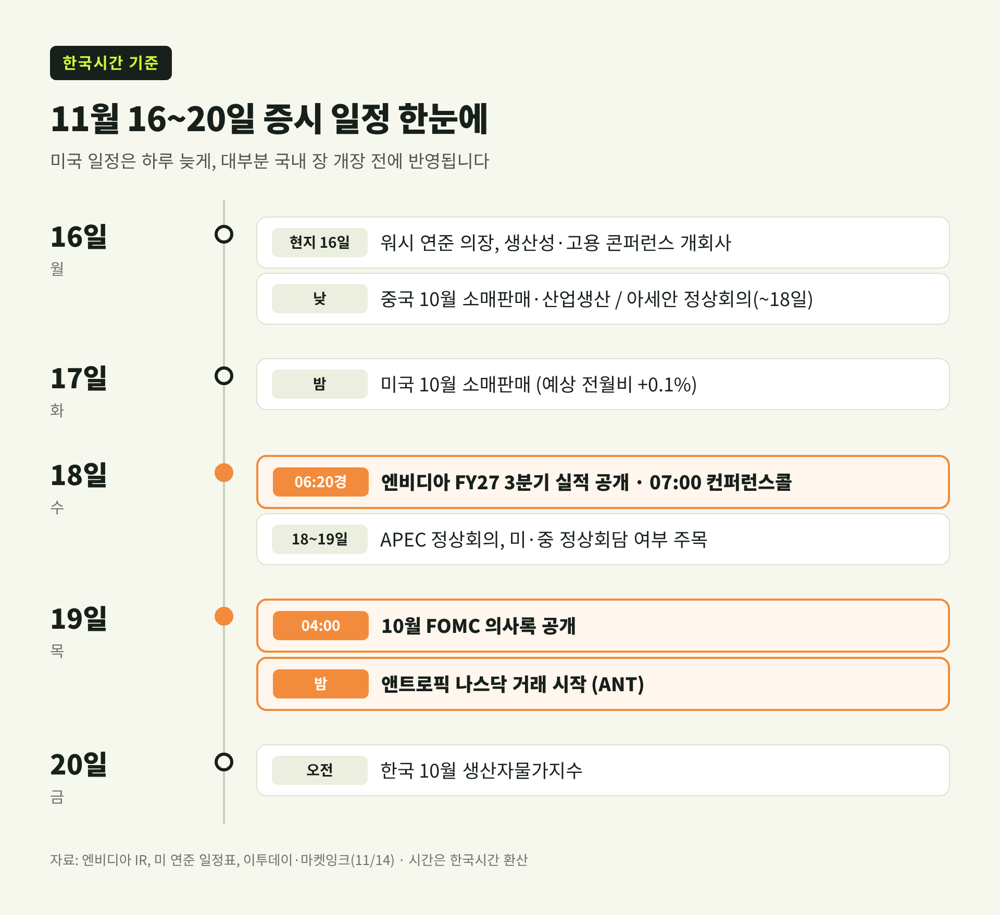
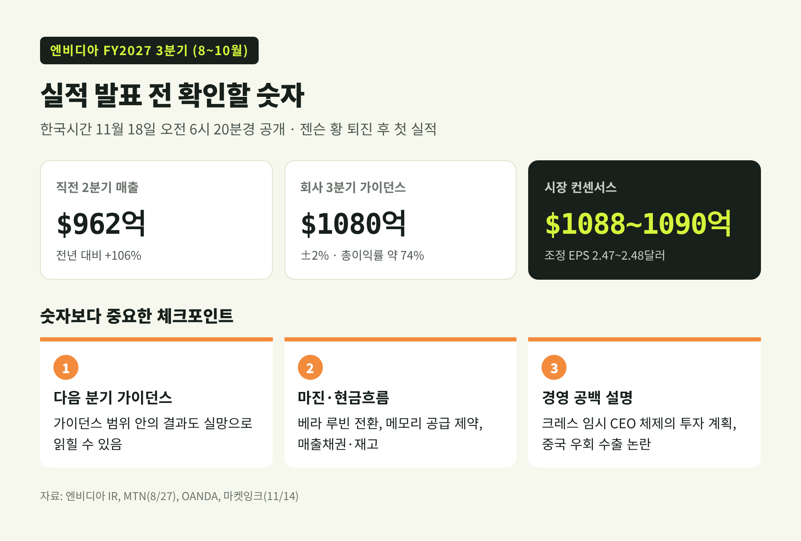
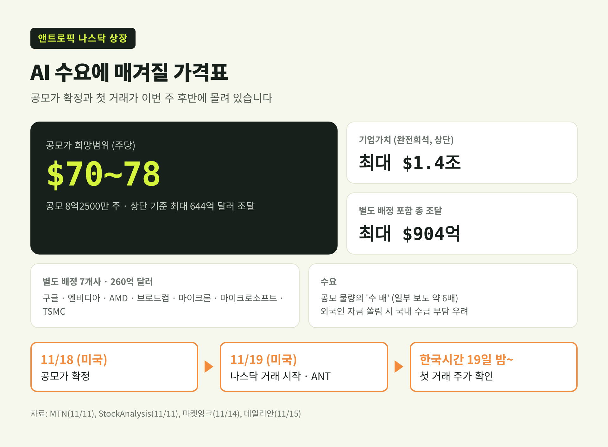
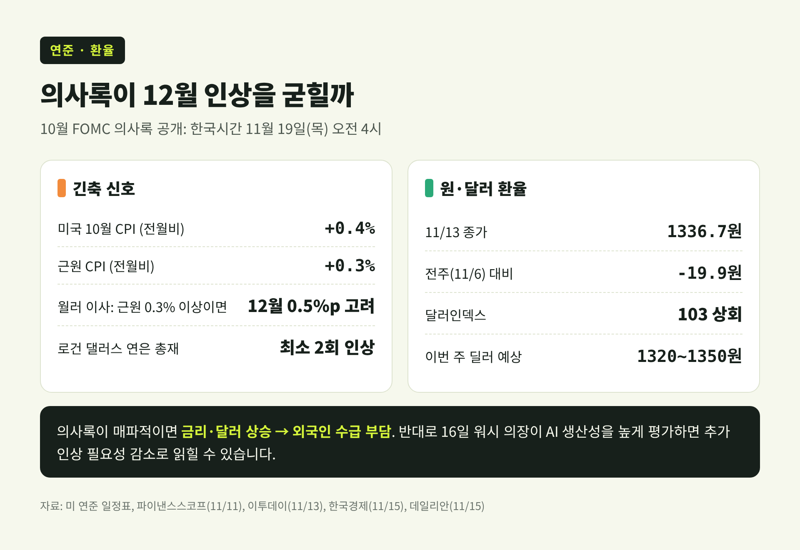
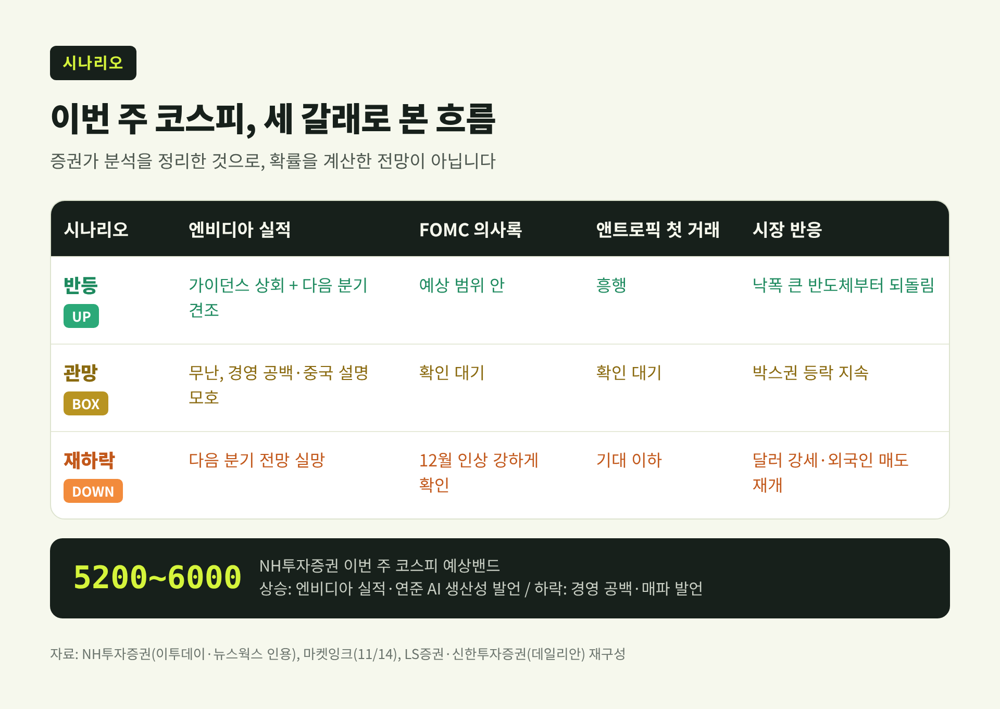

코스피 이번 주 일정, 엔비디아 실적부터 FOMC 의사록까지 사흘이 관건

이번 글에서는 11월 16일부터 20일까지 국내 증시를 움직일 일정과 시나리오를 정리해 보겠습니다.
핵심은 세 가지입니다. 엔비디아 3분기 실적(한국시간 18일 새벽), 미국 FOMC 의사록(19일 새벽), 앤트로픽 나스닥 상장(19일)이 한국시간 기준 사흘 안에 몰려 있습니다. 증권가가 제시한 이번 주 코스피 예상밴드는 5200~6000입니다.
■ 무슨 일이 있나: 한국시간으로 다시 짠 이번 주 달력
미국 일정은 현지 날짜로 보도되는 경우가 많습니다. 한국 투자자에게 중요한 건 국내 장이 언제 그 결과를 받아드느냐입니다. 그래서 시간대를 한국 기준으로 다시 맞춰 봤습니다.
먼저 16일(월)입니다. 케빈 워시 연준 의장이 샌프란시스코 연은에서 열리는 '생산성·고용 태스크포스' 콘퍼런스에서 개회사를 합니다. 같은 날 중국 10월 소매판매·산업생산이 나오고, 16~18일에는 아세안 정상회의가 이어집니다.
17일(화) 밤에는 미국 10월 소매판매가 발표됩니다. 시장 예상치는 전월 대비 0.1% 증가입니다(이투데이).
18일(수) 새벽이 첫 고비입니다. 회사 공식 공지에 따르면 실적은 미국 태평양시간 17일 오후 1시 20분경 공개되고, 컨퍼런스콜은 오후 2시에 시작합니다. 한국시간으로 환산하면 18일 오전 6시 20분경, 콜은 오전 7시입니다. 국내 장이 열리기 전에 숫자가 나온다는 뜻입니다.
19일(목) 새벽 4시에는 10월 27~28일 FOMC 의사록이 공개됩니다. 연준 공식 일정표상 미국 동부시간 18일 오후 2시입니다. 앤트로픽은 18일(미국) 공모가를 확정하고 19일 나스닥에서 'ANT' 종목코드로 거래를 시작합니다. 첫 거래는 한국시간 19일 밤부터 확인할 수 있습니다. 18~19일에는 APEC 정상회의가 열려 미·중 정상회담 여부도 관심사입니다.
20일(금)에는 한국 10월 생산자물가지수가 나옵니다.

■ 왜 중요한가: 반등과 반락이 한 주에 다 나왔다
지난주 코스피는 5059.69에서 5290.53으로 4.56% 올랐습니다. 겉으로는 반등이지만 속은 꽤 거칠었습니다.
9일에는 미국 중간선거 이후 AI 데이터센터 규제 우려로 장중 5018선까지 밀렸습니다. 10~11일에는 코어위브의 3분기 호실적에 힘입어 이틀간 7% 가까이 뛰었습니다. 13일에는 장중 5500선을 넘었다가 0.98% 하락 마감했습니다.
업종 간 온도 차도 컸습니다. IT하드웨어는 한 주 동안 14.9%, IT가전은 8.4% 빠졌습니다. 소프트웨어는 오히려 9.0% 올랐습니다.
수급도 불안했습니다. 5~11일 외국인은 코스피에서 5조4727억 원을 순매도했고, 그중 반도체가 3조9000억 원이었습니다. 기관(3조3209억 원)과 기타법인(2조2340억 원)이 이를 받아냈습니다. 13일 하루 외국인 순매도는 집계 기준에 따라 5475억~7034억 원으로 보도가 갈립니다.
예전에는 반도체 호재 하나면 지수 전체가 따라왔습니다. 지금은 AI를 둘러싼 의심이 해소될 때까지 매수와 매도가 하루에도 몇 번씩 뒤집히는 장입니다. 이번 주 일정이 '변곡점'으로 불리는 이유입니다.
■ 3분기 실적: 숫자보다 '다음 분기'와 '경영 공백'
엔비디아는 2027회계연도 3분기(8~10월, 10월 25일 종료) 실적을 발표합니다. 지난주 젠슨 황이 사장·CEO·이사직에서 물러난 뒤 처음 나오는 실적입니다. 콜렛 크레스 CFO가 임시 CEO를 겸하고 있고, 하비 존스 전 시놉시스 CEO가 이사회 의장을 맡았습니다.
숫자 자체는 비교적 분명합니다. 직전 2분기 매출은 962억 달러로, 전년보다 106% 늘었습니다. 회사가 제시한 3분기 매출 가이던스는 1080억 달러(±2%)이고, 총이익률 가이던스는 74% 안팎입니다. 시장 컨센서스는 매출 1088억~1090억 달러, 조정 주당순이익 2.47~2.48달러 수준입니다.
결국 '가이던스 정도 맞췄다'만으로는 부족할 수 있습니다. OANDA는 가이던스 범위 안의 결과도 실망으로 읽힐 수 있다며 다음 분기 전망에 무게를 뒀습니다. 이 밖에 차세대 '베라 루빈' 전환과 메모리 공급 제약이 마진에 주는 압박, 현금흐름·매출채권·재고 흐름도 함께 볼 대목으로 꼽았습니다.
국내 증권가가 보는 포인트는 조금 다릅니다. 나정환 NH투자증권 연구원은 "CEO 거취가 결정되면 불확실성 해소의 계기가 될 수 있으나" 결과에 따라 단기 변동성이 커질 수 있다고 짚었습니다. 마켓잉크는 경영진 교체 이후의 투자 계획, 중국 우회 수출 논란에 대한 설명을 관전 포인트로 들었습니다.
주가는 이미 많이 눌려 있습니다. 13일 종가는 162.85달러(-2.0%)였고, 6주 연속 주간 하락을 기록했습니다. 기대가 낮아진 만큼 반등 여지도, 실망 시 추가 하락 여지도 함께 열려 있는 셈입니다.

■ 앤트로픽 상장: AI 수요의 증명인가, 수급의 블랙홀인가
이번 실적이 AI 공급망의 성적표라면, 앤트로픽 상장은 AI 수요에 매겨지는 가격표입니다.
앤트로픽이 제시한 공모가 희망범위는 주당 70~78달러입니다. 공모 주식은 8억2500만 주이고, 상단 기준 최대 644억 달러를 조달합니다. 여기에 구글·엔비디아·AMD·브로드컴·마이크론·마이크로소프트·TSMC 7개사가 260억 달러 규모의 별도 배정에 참여합니다. 모두 합치면 최대 904억 달러입니다. 기업가치는 상단 기준 약 1조 달러, 완전희석 기준으로는 최대 1조4000억 달러가 거론됩니다.
수요는 공모 물량의 수 배에 이른다는 보도가 나왔고, 약 6배라는 보도도 있습니다.
국내 증시에는 양면이 있습니다. 강진혁 신한투자증권 선임연구원은 상장이 AI 수요를 확인하는 이벤트라고 보면서도, 상장 전후 수급발 변동성에 유의해야 한다고 했습니다. 외국인 자금이 앤트로픽으로 쏠리면 국내 증시에는 부담이 될 수 있다는 관측입니다. 마켓잉크는 금리 우려가 커진 상태에서 상장이 기대에 못 미치면 외국인 매도가 다시 거세질 수 있다고 내다봤습니다.

■ 연준과 환율: 의사록이 '12월 인상'을 얼마나 굳힐까
이번 주 거시 변수의 중심은 연준의 긴축 기조입니다.
10월 미국 소비자물가는 전월 대비 0.4%, 근원 물가는 0.3% 올라 모두 예상을 웃돌았습니다. 크리스토퍼 월러 연준 이사는 근원 물가가 0.3% 이상이면 12월에 0.5%포인트 인상도 고려해야 한다고 말했는데, 10월 수치가 그 조건에 걸렸습니다. 로리 로건 댈러스 연은 총재는 최소 두 차례 추가 인상이 필요하다고 했습니다.
19일 새벽 공개되는 의사록에서 인상 필요성이 강하게 확인되면 미 국채금리와 달러가 오를 수 있습니다. 그렇게 되면 외국인 수급에는 부담입니다. 반대 방향의 재료도 있습니다. 나정환 연구원은 16일 워시 의장 발언에서 AI의 생산성 향상 평가가 나오면, 물가 안정 기대와 추가 인상 필요성 감소로 해석될 수 있다고 봤습니다.
환율은 비교적 차분합니다. 원·달러 환율은 13일 1336.7원으로 마감했습니다. 전날보다 6.0원 올랐지만, 한 주 전(1356.6원)과 비교하면 19.9원 내려왔습니다. 달러인덱스가 103을 넘었는데도 원화가 강했던 건 삼성전자·SK하이닉스 등 반도체 수출기업의 달러 매도 덕분이라는 분석입니다(한국경제). 외환 딜러들은 이번 주 1320~1350원 범위를 예상했습니다. 하건형 신한투자증권 연구위원은 추가 긴축 우려로 달러 강세가 이어질 수 있지만, 반도체 수출 호조에 따른 달러 공급이 상승폭을 제한할 것으로 봤습니다.

■ 삼성전자·SK하이닉스: 자체 전망은 탄탄, 변수는 고객사의 다음 말
13일 삼성전자는 0.96% 내린 20만6000원, SK하이닉스는 3.03% 내린 121만6000원에 마감했습니다. 둘 다 장중 상승분을 지키지 못했고, 외국인 순매도 1위가 SK하이닉스였습니다.
두 회사의 자체 전망은 나쁘지 않습니다. SK하이닉스는 10월 말 실적 발표에서 2027~2028년 생산능력의 50% 이상이 장기계약으로 채워졌다고 밝혔습니다. 삼성전자는 2027년 AI 인프라 투자가 높게 유지되고 수요가 공급을 웃돌 것이라고 봤습니다.
다만 이 전망들은 젠슨 황 퇴진 이전에 나왔습니다. 그래서 이번에 나올 다음 분기 가이던스가 두 회사 주가에 바로 연결될 가능성이 큽니다. 이경민 대신증권 연구원은 견조한 수요와 차세대 GPU 계획이 확인되면 반도체 투자심리가 더 개선될 것으로 분석했습니다. 이재원 유안타증권 연구원도 코어위브 실적과 수출 통계가 반도체 이익 전망을 받친다며 업종 의견을 유지했습니다.
미·중 정상회담도 변수입니다. 나정환 연구원은 회담 결과로 대중 반도체 수출 규제가 강화되면 국내 반도체 업종에는 상대적으로 유리할 수 있다고 봤습니다.
■ 전망: 세 갈래 시나리오로 본 이번 주
NH투자증권은 이번 주 코스피 밴드를 5200~6000으로 제시했습니다. 상승 요인으로는 엔비디아 실적과 연준의 AI 생산성 관련 발언을, 하락 요인으로는 경영 공백 이슈와 연준 위원들의 매파적 발언을 꼽았습니다.
증권가 분석을 바탕으로 이번 주 흐름을 세 갈래로 나눠 보면 이렇습니다.
- 반등 시나리오 — 실적이 가이던스를 웃돌고 다음 분기 전망도 견조하며, 의사록이 예상 범위 안에 머무는 경우입니다. 낙폭이 컸던 반도체부터 되돌림이 나올 수 있습니다.
- 관망 시나리오 — 실적은 무난하지만 경영 공백·중국 관련 설명이 모호한 경우입니다. 의사록과 앤트로픽 첫 거래를 확인할 때까지 박스권 등락이 이어질 가능성이 큽니다.
- 재하락 시나리오 — 의사록이 12월 인상을 강하게 굳히고, 앤트로픽 상장이 기대에 못 미치는 경우입니다. 달러 강세와 외국인 매도가 다시 겹칠 수 있습니다.
한계도 분명히 적어 둡니다. 이 시나리오들은 증권가 전망을 정리한 것이지 확률을 계산한 것이 아닙니다. 황산해 LS증권 연구원은 이번 실적과 앤트로픽 상장이 낙폭과대 인식을 강화할 수는 있어도 장기적인 AI 투자 환경의 압박을 해소하기는 어렵다고 했습니다. 단기 반등에 참여하는 것과 추세적으로 비중을 늘리는 것을 구분하라는 조언입니다.

정리하면 이렇습니다.
이번 주는 하나의 숫자가 아니라, 18일 새벽부터 19일 밤까지 이어지는 세 번의 확인이 방향을 정합니다. 실적은 AI 수요가 여전한지를, 의사록은 금리 부담이 얼마나 커질지를, 앤트로픽은 시장이 AI에 얼마를 매길지를 보여줄 것입니다.
"이번 주는 지수보다 일정표를 먼저 보는 한 주입니다."
서두를 이유가 있느냐고 물으신다면, 사흘만 기다려도 판단의 재료가 훨씬 많아진다고 답하겠습니다.
본 글은 정보 제공 목적으로 작성되었으며, 특정 종목이나 상품에 대한 투자 권유가 아닙니다. 투자 판단과 그 결과에 대한 책임은 투자자 본인에게 있습니다.
참고한 기사·자료 - 이투데이, [주간증시전망] 코스피 5200~6000선 반등 전망…엔비디아 실적·연준 주목 (2026-11-14) https://www.etoday.co.kr/news/view/2648041 - 데일리안, 엔비디아 실적·앤트로픽 IPO, AI 투심 살릴까…코스피 5200~6000 (2026-11-15) https://www.dailian.co.kr/news/view/1714848 - 뉴스웍스, 젠슨 황發 불확실성 지속…엔비디아 실적에 쏠린 눈 (2026-11-15) https://www.newsworks.co.kr/news/articleView.html?idxno=903070 - 마켓잉크, 엔비디아 실적·앤트로픽 상장·연준 긴축 신호 한 주에 몰렸다 (2026-11-14) https://www.market-ink.co.kr/news/articleView.html?idxno=15269 - NVIDIA IR, NVIDIA Sets Conference Call for Third Quarter Financial Results (2026-10-28) https://investor.nvidia.com/news/press-release-details/2026/NVIDIA-Sets-Conference-Call-for-Third-Quarter-Financial-Results/ - Federal Reserve, November 2026 calendar https://www.federalreserve.gov/newsevents/2026-november.htm - OANDA, NVIDIA Q3 earnings preview (2026-11) https://www.oanda.com/eu-en/blog/NVIDIA-q3-earnings-preview-nov-2026 - MTN, 앤트로픽, 공모가 70~78달러 제시 (2026-11-11) https://news.mtn.co.kr/article/2026111101552940388 - StockAnalysis, Anthropic's IPO is said to be multiple times oversubscribed (2026-11-11) https://stockanalysis.com/news/anthropic-ipo-multiple-times-oversubscribed/ - 파이낸셜뉴스, 코스피 5500선 찍고 5290.53 마감 (2026-11-13) https://www.fnnews.com/news/202611131625181132 - 이투데이, [환율마감] 원·달러 5거래일만 반등 (2026-11-13) https://www.etoday.co.kr/news/view/2648012 - 한국경제, 환율·채권, 美 긴축 경계…환율 1330원대 줄다리기 (2026-11-15) https://www.hankyung.com/article/2026111574521 - 탑스타뉴스, 삼성전자·SK하이닉스 주간 전망…엔비디아 주문이 관건 (2026-11-15) https://www.topstarnews.net/news/articleView.html?idxno=16276906
#코스피전망 #이번주증시일정 #엔비디아실적 #FOMC의사록 #앤트로픽상장 #삼성전자 #SK하이닉스 #원달러환율